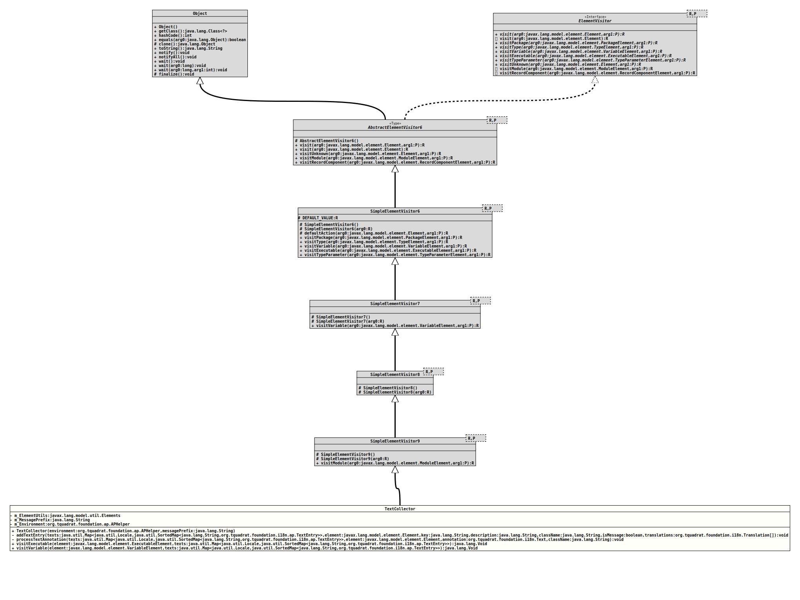

Package org.tquadrat.foundation.i18n.ap
Class TextCollector
java.lang.Object
@ClassVersion(sourceVersion="$Id: TextCollector.java 1062 2023-09-25 23:11:41Z tquadrat $")
@API(status=INTERNAL,
since="0.1.0")
public class TextCollector
extends SimpleElementVisitor9<Void,Map<Locale,SortedMap<String,TextEntry>>>
A visitor class that collects the texts for resource bundle properties
files from the annotations.
- Author:
- Thomas Thrien (thomas.thrien@tquadrat.org)
- Version:
- $Id: TextCollector.java 1062 2023-09-25 23:11:41Z tquadrat $
- Since:
- 0.0.2
- UML Diagram
-

UML Diagram for "org.tquadrat.foundation.i18n.ap.TextCollector"
{kind=link}
-
Field Summary
FieldsModifier and TypeFieldDescriptionprivate final ElementsSome helper utilities for the work withElementinstances.private final APHelperThe processing environment.private final StringThe prefix for the message ids.Fields inherited from class javax.lang.model.util.SimpleElementVisitor6
DEFAULT_VALUE -
Constructor Summary
ConstructorsConstructorDescriptionTextCollector(APHelper environment, String messagePrefix) Creates a newTextCollectorinstance. -
Method Summary
Modifier and TypeMethodDescriptionprivate final voidaddTextEntry(Map<Locale, SortedMap<String, TextEntry>> texts, Element element, String key, String description, String className, boolean isMessage, Translation[] translations) Adds the text entries to the texts map.private final voidprocessTextAnnotation(Map<Locale, SortedMap<String, TextEntry>> texts, Element element, Text annotation, String className) Processes a text annotation.final VoidvisitExecutable(ExecutableElement element, Map<Locale, SortedMap<String, TextEntry>> texts) final VoidvisitVariable(VariableElement element, Map<Locale, SortedMap<String, TextEntry>> texts) Methods inherited from class javax.lang.model.util.SimpleElementVisitor9
visitModuleMethods inherited from class javax.lang.model.util.SimpleElementVisitor6
defaultAction, visitPackage, visitType, visitTypeParameterMethods inherited from class javax.lang.model.util.AbstractElementVisitor6
visit, visit, visitRecordComponent, visitUnknown
-
Field Details
-
m_ElementUtils
Some helper utilities for the work withElementinstances. -
m_MessagePrefix
The prefix for the message ids. -
m_Environment
The processing environment.
-
-
Constructor Details
-
TextCollector
Creates a newTextCollectorinstance.- Parameters:
environment- The processing environment for the annotation processor.messagePrefix- The configured message prefix.
-
-
Method Details
-
addTextEntry
private final void addTextEntry(Map<Locale, SortedMap<String, TextEntry>> texts, Element element, String key, String description, String className, boolean isMessage, Translation[] translations) Adds the text entries to the texts map.- Parameters:
texts- The texts map.element- The annotated element.key- The resource bundle key.description- The description for the text.className- The fully qualified name of the class that defines the text.isMessage-trueif the text is a message,falseotherwise.translations- The texts in the various languages.
-
processTextAnnotation
private final void processTextAnnotation(Map<Locale, SortedMap<String, TextEntry>> texts, Element element, Text annotation, String className) Processes a text annotation.- Parameters:
texts- The texts map.element- The annotated element.annotation- The text annotation.className- The fully qualified name of the class that defines the text.
-
visitExecutable
public final Void visitExecutable(ExecutableElement element, Map<Locale, SortedMap<String, TextEntry>> texts) - Specified by:
visitExecutablein interfaceElementVisitor<Void,Map<Locale, SortedMap<String, TextEntry>>> - Overrides:
visitExecutablein classSimpleElementVisitor6<Void,Map<Locale, SortedMap<String, TextEntry>>>
-
visitVariable
public final Void visitVariable(VariableElement element, Map<Locale, SortedMap<String, TextEntry>> texts) - Specified by:
visitVariablein interfaceElementVisitor<Void,Map<Locale, SortedMap<String, TextEntry>>> - Overrides:
visitVariablein classSimpleElementVisitor7<Void,Map<Locale, SortedMap<String, TextEntry>>>
-